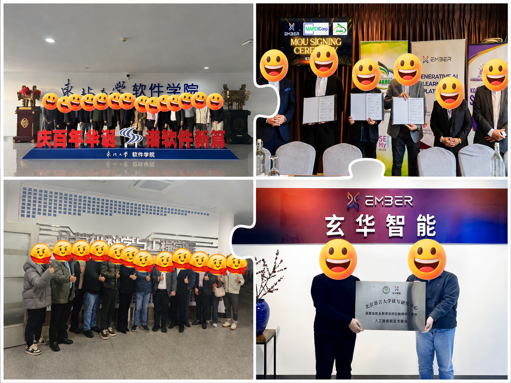

教师与学生
角色、任务和AI使用基础差异明显，需要不同的上手路径。
University Channels · Partnership Materials · B2B Pilots
从高校和教育机构需求出发，把教师、学生与试点反馈转化为产品演示、教师案例、课程方案与合作资料，协同产品、内容和业务团队推进试点落地。
01 · Context
产品服务高校教师、学生与院校客户，覆盖教学、备课、自学和内容生成等场景。市场运营需要同时理解终端用户任务与院校采购、试用和教学落地诉求，再决定产品演示、案例内容和合作资料如何组织。
角色、任务和AI使用基础差异明显，需要不同的上手路径。
功能价值依赖输入方式、结果预期与具体教学任务的清晰连接。
需要同时承接终端用户问题、教师案例和客户侧产品宣讲。
02 · Feedback Loop
以用户角色、任务场景、问题类型和影响程度为基础完成标签化整理，避免反馈停留在零散记录，并让产品与运营动作拥有一致的优先级。
汇总教师、学生、试点客户与社群问题。
按角色、场景、功能和问题类型归类。
结合频次、影响和解决成本判断优先级。
分流至产品优化、内容更新或服务支持。
通过功能使用和重复问题验证效果。
03 · Taxonomy
同一句“不会用”可能来自入口不清、任务不明、结果不符预期或教学场景不匹配。只有先完成归因，才能决定修改产品还是补充内容。
| 反馈类型 | 用户信号 | 运营判断 | 对应动作 |
|---|---|---|---|
| 进入与上手 | 找不到入口，不清楚第一步 | 首次任务路径过长 | 快速上手指南、入口说明、首任务引导 |
| 任务表达 | 不知道如何描述需求 | AI输入门槛影响功能使用 | 任务模板、输入示例、场景化教程 |
| 结果预期 | 输出与期待不一致 | 用户缺少结果判断标准 | 结果示例、限制说明、问题排查FAQ |
| 教学适配 | 不知道如何进入课程流程 | 功能与真实教学任务连接不足 | 教师案例、课程方案、产品演示 |
04 · Product Journey
把用户体验拆成可观察步骤，在每个节点同时记录行为数据和问题反馈，定位从“看到功能”到“完成任务”之间的主要阻碍。
入口访问、登录与角色信息
功能页查看、教程点击与问题反馈
功能启动、输入完成与中途退出
结果生成、重新尝试与异常反馈
保存、导出与教学场景采用
再次访问、核心功能频次与新需求
05 · Metric Framework
不把数据看板做成数字陈列，而是把每个指标和需要回答的运营问题对应：用户有没有开始、是否完成任务、是否理解价值，以及同类问题是否减少。
核心功能使用率提升。通过路径分析、教程内容和场景案例共同降低功能理解与首次使用门槛。
判断新用户是否从看到功能进入实际操作。
观察关键能力是否被真实任务采用。
判断内容和结果是否形成持续使用理由。
验证同类问题是否因产品或内容动作减少。
06 · Content System
将复杂AI概念转化为四层产品内容：先降低理解成本，再帮助完成任务，随后解决异常，最终用真实场景支持教师和院校客户采用。
入口说明、核心概念和首次任务步骤，帮助用户尽快开始。
拆解输入、操作和结果处理，让功能可以被独立完成。
沉淀重复问题、功能边界和异常处理，减少沟通成本。
用备课、教学和自学案例连接产品能力与真实任务。
07 · University Partnerships
高校试点同时检验产品价值、教学适配和服务能力。运营侧承接院校需求、产品演示、教师案例与课程材料，并协同产品、内容和业务团队推动问题关闭与下一轮沟通。

围绕目标用户任务组织功能顺序和产品表达。
用具体教学场景说明功能价值和采用方式。
整理方案、FAQ与使用内容，支持客户沟通。
输出10+项建议，推动产品、内容与业务共同处理。
08 · Outcome
项目最终沉淀的不只是内容数量，而是一套从机构需求、宣讲资料、试点反馈到跨团队处理的合作支持方式。
用户反馈被整理为可检索、可分级的问题标签。
指南、FAQ、教程与案例覆盖不同使用阶段。
核心功能使用率在路径与内容优化后得到提升。
产品与运营建议进入演示材料和试点推进。
机构需求 → 合作资料 → 产品演示 → 高校试点 → 反馈复盘 → 下一轮推进